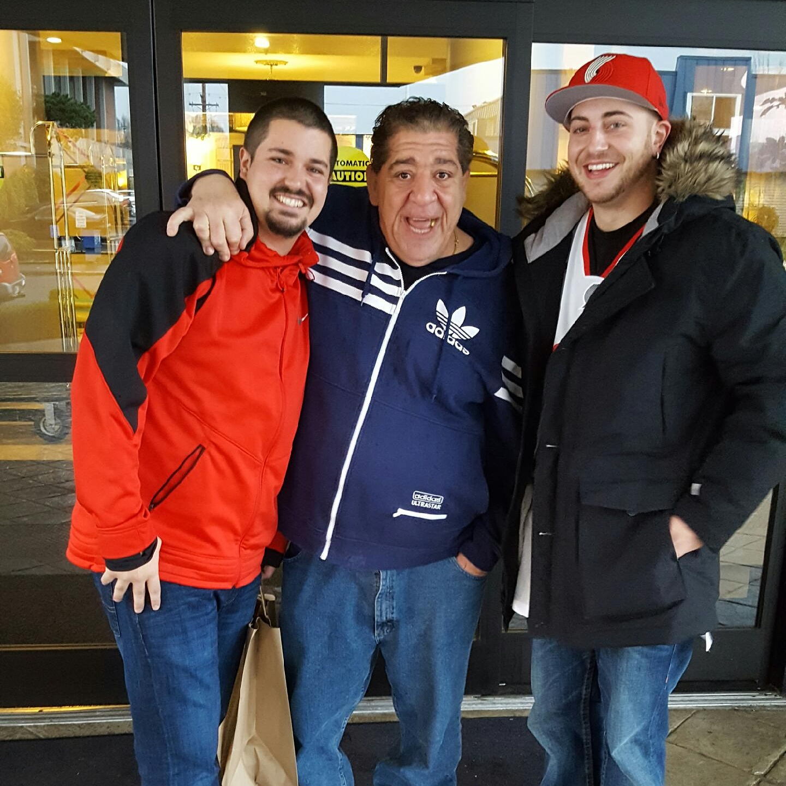

Week 1 Project
Matthew Patrick Caswell
Here is a list of some of the projects that i have been working on so far
- Opies webpage here
- for this webpage I mainly only used html because it was one of the first ones we made. it shows the type of dog that i own and it also shows the breeder that we purchased him from.
- Nirvana webpage Boom
- for this webpage i also mainly used html because we were practicing our skills this is a small and simple webpage that shows a brief history of nirvana.
Here are a couple more projects ive done later in the week that I feel are a little better.
- Thailand Vacation here
- this project we used html as well as css and bootsrap to create a thailand vacation package webpage.
- Wikipedia project here
- for this project we tried to copy the wikipedia homepage to our best ability. we used html, css, and bootsrap for this as well
About Me:
I was born in 1992, on the East Coast in Portland, Maine. I have one sibling who is my older sister, My dad worked as a Merchant Marine and sailed as chief engineer for 20 years for the horizon lines company. he grew up his whole life in Maine and went to MMA (Maine Maritime Academy) and got his maritime license after 4 years. My mom grew up in maine but unlike my dad who grew up in the city, my mom grew up on a large farm with 9 brothers and sisters. they had 3000 chickens, dozens and dozens of cows and one of the best farms in all of Maine. families would drive an hour or more just to come out to my grandparents farm just to get their amazing produce that they grew every year. after I was born my dad decided he wanted to be closer to work since he was working a permanent Alaska job which means it docks in Tacoma and goes back and forth to 3 different islands of alaska. so my parents moved to Incline Village Nevada, where i lived for 8 years. Then when i was around 9 or 10 years old my dad decided to move even closer to work so thats when we moved into the PNW area. Ive lived in Bonney Lake ever since. I graduated from Sumner High-School in 2010,I was Varsity Wrestler as well as Varsity Baseball. Im extremely into sports, its my biggest passion. After high-school I attended Pierce College and got my Associates Degree. worked at Home Depot for 2 years and became a department supervisor, then i worked for a warehouse in Sumner called Owens and Minor, after I worked there for a year i got a job as a delivery driver for a flooring company. I would drive all over western washington and bring in hardwood and tile to new construction homes. after jumping around to a couple different manual labor jobs I realized this was not something I wanted to continue. I knew if I wanted to start making real money and be able to support a family on my own I would need to gain a specialized trade or skill. So when I tore my ACL playing 4 vs. 4 basketball at the YMCA, I took it as a sign that I needed to change something in my life. I didnt wanna be 35 or 40 years old and have aches and pains and not walk straight because I beat my body up with extreme physical demanding jobs. so thats when I started looking into coding schools and found epicodus.
list of closest friends
- Casey Edwards
- Mercedee Croppi
- Dominic Carter
- Keith Kelly
- Jonas Moser
- Spencer Ewing
- Doug Ault
- Justin Whisler
- Mike Dent
you can view my live gh page Here